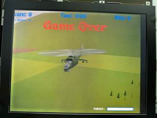
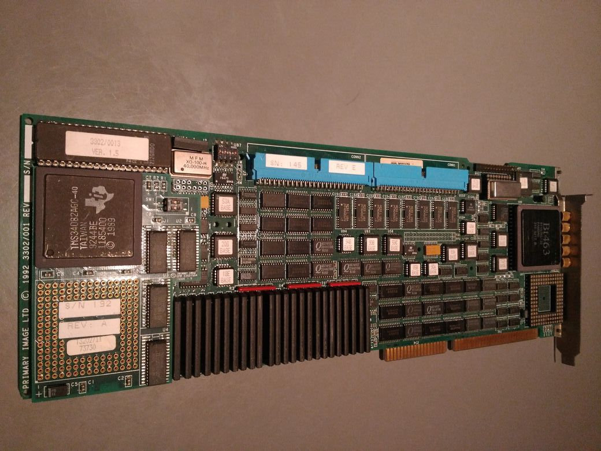
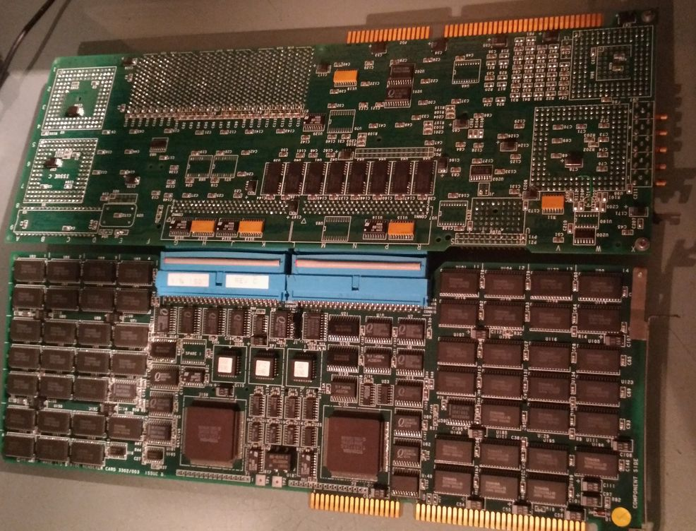
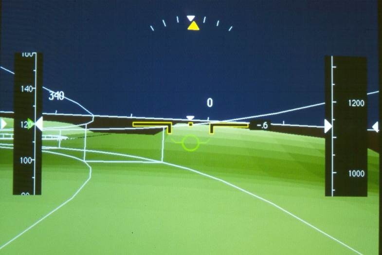
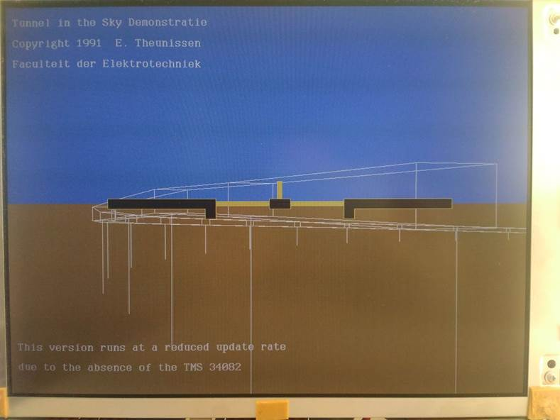
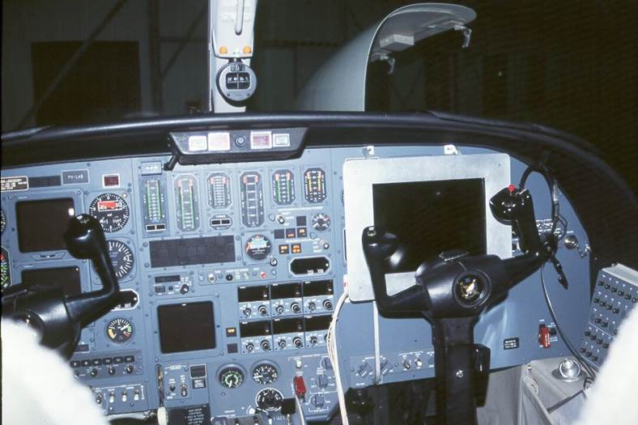
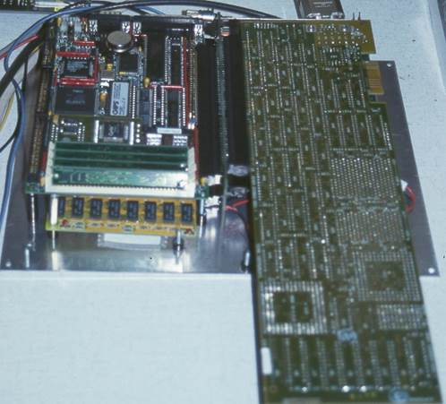
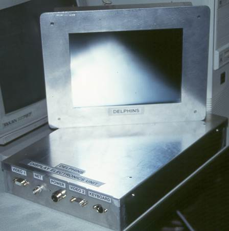

The TMS34020 was the successor of the TMS34010, the first programmable graphics processor chip. It was used in the F-16 as the Advanced Display Processor (ADP)[1]. It was also used for the rendering of perspective flightpath displays and early synthetic vision displays.
The second generation of the ISD Avionics display formats were rendered using the Texas Instruments Graphics Architecture (TIGA) API. The first generation was done on the AMIGA.
The Avionics displays in the late Eighties and early Nineties relied on a so-called hybrid raster-stroke mode. This allowed the primary flight symbology to be rendered in a vector mode while using a limited amount of raster time to fill-in surfaces such as the artificial horizon. Since access to these displays was difficult and development environments often proprietary, this limited the possibility for development and flight testing of new concepts by third parties. In 1990, PC graphics still lacked the capability to render real-time raster graphics with sufficient resolution and colors to emulate an Avionics Primary Flight Display (PFD). Graphics workstations such as those from SGI did have the capability, but both because of their cost and Size, Weight and Power constraints the use of PC-based hardware with a dedicated graphics processor was deemed a better alternative. In 1990, a system based on the Intel 386 and a TI TMS34020 Software Development Board was selected. This allowed an architecture that was quite similar to those in Avionics displays. In one of the actual EFIS systems an 80186 served as the processor that used data from the ARINC bus to generate a sequence of graphics instructions that were serialized over a dedicated bus to the display computer (using a Z8000), which controlled the generation of the vector and raster graphics.
Similarly, the TMS34020 board served as a dedicated computer executing a display list that is generated by the host[2] (in our case the 80386 system). More advanced setups developed by Primary Image Ltd used a daughter board with additional memory and 4 Hitachi Hi-Speed Shading processor for rendering Gouraud-shaded polygons (the Stride graphics card).
In the early Nineties, Primary Image developed a flightsimulator program to run on this graphics card. The following picture shows a screencap.

I recently took a 20 second video to illustrate what this PC-based flightsim looked like:
For the initial (1994) DELPHINS Synthetic Vision System (SVS) displays, the Primage Image Stride board was used.
After TI discontinued the TMS34020 line we moved to the Voodoo chipset from 3DFX for our Avionics display prototypes
A picture of the main board (developed by Primary Image) is below. It had 8MB of DRAM, 3MB of VRAM and a TMS34082 coprocessor. A double-buffered 8-bit framebuffer for a resolution up to 1280x1024 was supported.

The connector on top of the board is for the addition of the board with the hi-speed shading processors. This board provided a separate 24-bit framebuffer in addition to the 8-bit framebuffer controlled by the TMS34020. This allowed rendering of synthetic terrain in the 24-bits framebuffer while drawing guidance symbology in the 8-bit overlay.
Below is a picture of the twin-board configuration

An example of an early SVS display rendered with the TIGA card above is below

The very first perspective flightpath display generated with a TMS34020 is pictured below (1991). This was on a TI Software Development Board (SDB). Note that in 1991 we did not have such nice LCD’s. The picture was taken at a later moment when running the original executable from 1991.

On December 19 (1994), a setup with the TMS34020 chipset was used to perform the first actual flighttest with the DELPHINS Tunnel-in-the-Sky display at Aberdeen airport. On December 20, several approaches to an altitude of 200 ft were
flown using the display.

Final software testing in a hangar at Schiphol airport in the Netherlands, December 1994.
A 486SX SBC connected to a TMS34020 SDB formed the basis for the Display Computer
 
If you want to play with the TMS34082, here is some software
TMS340 C source debugger User’s Guide
TMS34010 Assembly Language Tools
TMS34010 C-Compiler Reference Guide
TMS34010 C-Compiler User Guide
[1] Riffle, T.E. (1996) Open Systems Architecture and Commercial of the Shelf Technology Applied to Retrofit Military Display Subsystems. Proceedings of the 15th Digital Avionics Systems Conference, pp. 211-216. IEEE 0-7803-3385-3/96
[2] This idea was proposed by my friend Tycho in 1991, resulting in the *hostbuf++= instruction that is the core of the display list generation in D3S, up to today (2021)